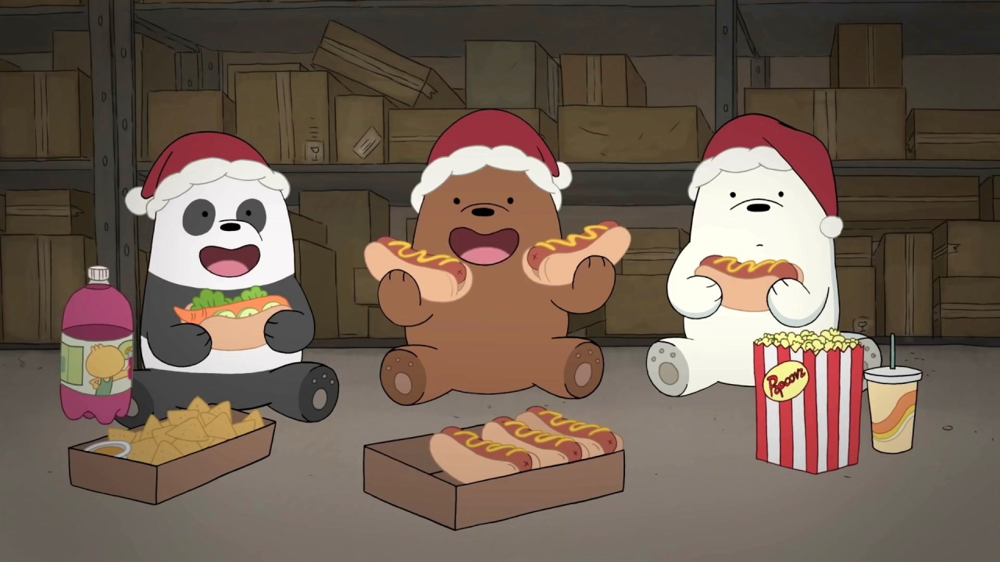
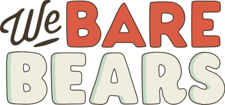

❮
|  |
|---|
|
We Bare Bears is an American animated sitcom created by Daniel Chong for Cartoon Network. The show follows three bears, Grizzly, Panda, and Ice Bear (respectively voiced by Eric Edelstein, Bobby Moynihan, and Demetri Martin), and their awkward attempts at integrating with the human world in the San Francisco Bay Area. The series was based on Chong's webcomic The Three Bare Bears, and the pilot episode made its world premiere at the KLIK! Amsterdam Animation Festival, where it won in the "Young Amsterdam Audience" category. The show premiered on July 27, 2015 and ended on May 27, 2019 and ran for four seasons and 140 episodes. |
 |